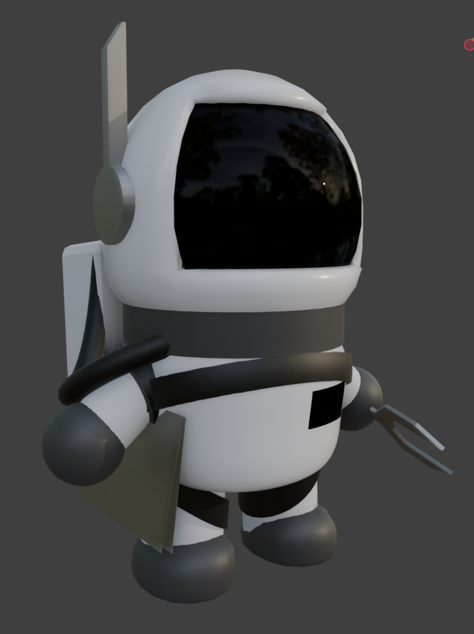
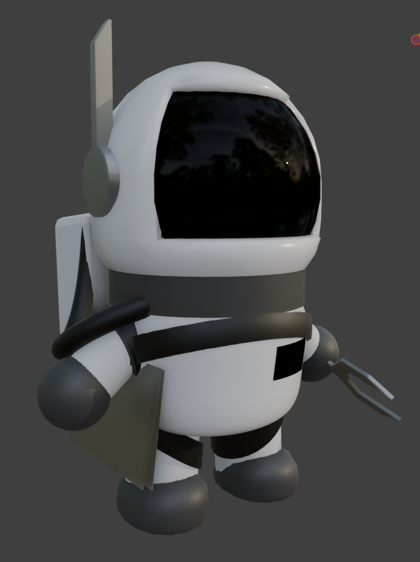

Week 1
Concept Art & Game Proposal
This week, I worked on the concept art for our game proposal.
After some discussion with my teammates, we decided on a space-adventure
art theme for the game. I got started drawing right away, starting
with rough sketches and eventually moving onto some simple sprite work to
get the feel down for out game.
 This picture shows the main character of the game in a chaotic environment,
which we decided early on was the main core of our game mechanics. We took inspiration
from games like Overcooked where the player has to master multitasking in a hectic
setting.
This picture shows the main character of the game in a chaotic environment,
which we decided early on was the main core of our game mechanics. We took inspiration
from games like Overcooked where the player has to master multitasking in a hectic
setting.
 Here is another piece of concept art I created showing the spaceship that the main character
must repair. The player will be tethered to a cable at the center of the ship,
and can traverse it to make repairs to damaged modules. Asteroids will occasionally
fly past the ship forcing the players to dodge them. Also pictured is a turret
shooting down an alien invader.

With some of the concept art complete, I started working on some rough art of
the main character. I created both a pixel art version and a simple 3D model
to explore different visual styles for the game.
Here is another piece of concept art I created showing the spaceship that the main character
must repair. The player will be tethered to a cable at the center of the ship,
and can traverse it to make repairs to damaged modules. Asteroids will occasionally
fly past the ship forcing the players to dodge them. Also pictured is a turret
shooting down an alien invader.

With some of the concept art complete, I started working on some rough art of
the main character. I created both a pixel art version and a simple 3D model
to explore different visual styles for the game.
Some problems I forsee moving forward is where to take the art direction. The initial concept proposed for the game was a pixel art style, but as the main artist, I feel more comfortable working in 3D. While I can work in 2d, I forsee making the animations and assets taking much longer, and I can't really guarantee the quality. Another problem is that as a Computer Science student, I am the most experienced programmer, which likely means that I will be helping our designated programmers should any issues arise, which could slow down the art.
Going forward, I'll have to have some discussions with the rest of the team, and more specifically, with our secondary artist to nail down the art style. I'll also have to manage my time effectively to ensure that I can contribute to the programming side of the project just in case. I'm thinking that I may need to leave more assets to our secondary artist just in case, but maybe the programmers will be fine on their own.
Overall, the concept art really helped solidify our game proposal and gave us a bunch of options moving forward. Next steps for me will be to finalize the art direction and start creating more in-depth assets for the game.